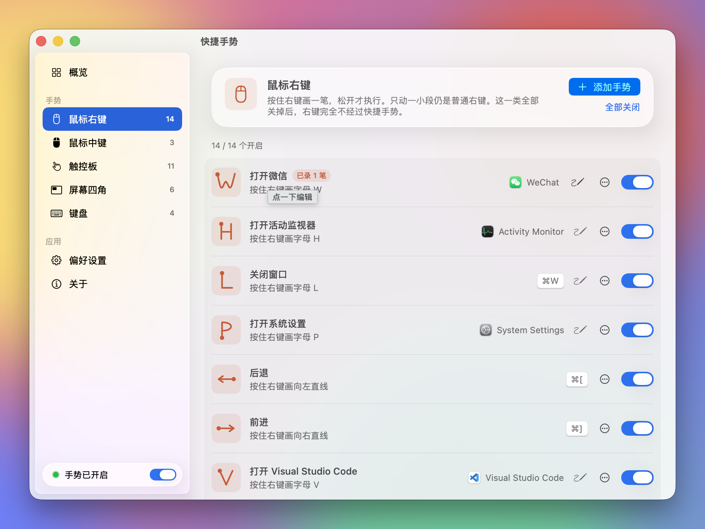
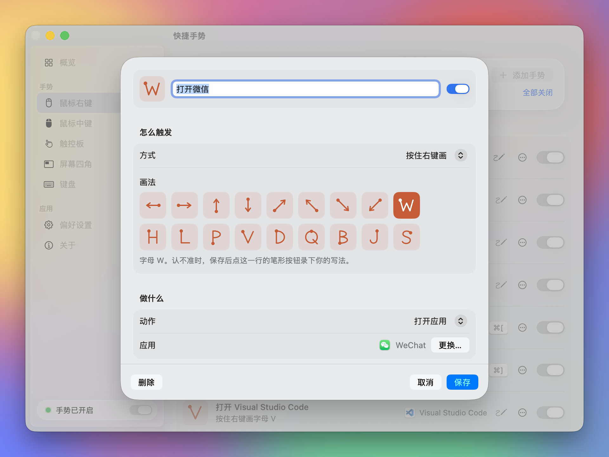

鼠标右键
按住右键画直线或字母，松开才执行。中键也能画，按住中键滚动可以切标签。
开源 · macOS 菜单栏工具
按住右键画个 W 打开微信，向左一划就后退。指针推到屏幕角落就能锁屏、调音量。手势可以自己添加和修改。不联网，不收集数据。

三种画法
只有按住并明显画长一笔才算手势。短按右键仍然是右键菜单，触控板照常使用，不会误触。
按住右键画直线或字母，松开才执行。中键也能画，按住中键滚动可以切标签。
全局快捷键。⌥ 加方向键把窗口放到半屏，⌃⌥A 打开应用程序文件夹。
指针推到角落，右键单击开屏保、锁屏；滚动鼠标滚轮调亮度和音量。
按你的习惯
选一种画法、一个角落或一个快捷键，再选要做的事：打开应用、网址、文件夹，发快捷键，摆放窗口。字母认不准时，照你的写法录一次。

安装
需要 macOS 14 和 Xcode 命令行工具（xcode-select --install）。
脚本会跑测试、编译、签名，装到 ~/Applications/快捷手势.app 并打开。
git clone https://github.com/itsdangding/GesturePad.git
cd GesturePad
./scripts/install.sh第一次打开会弹出设置窗口，点「打开并授权」，在系统设置里打开「快捷手势」。监听鼠标、移动窗口都靠它。
只有键盘快捷键（如 ⌥ 加方向键）需要。系统设置的列表里没有时，点加号，前往 ~/Applications/快捷手势.app。